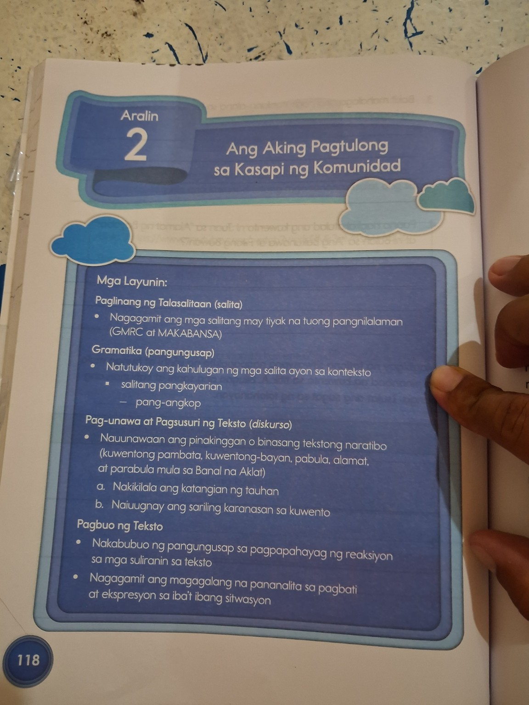
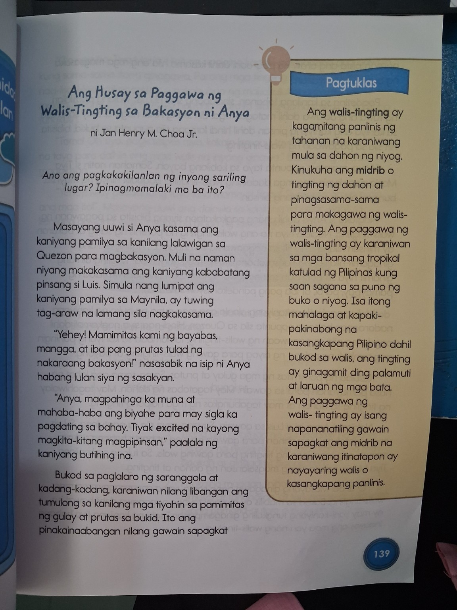
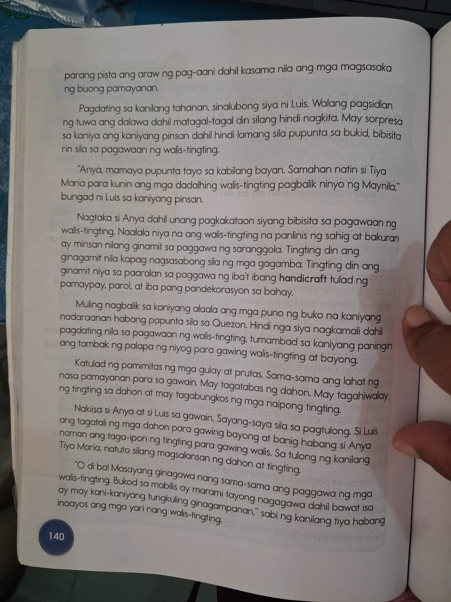

Ang Aking Pagtulong sa Kasapi ng Komunidad
Batay sa ibinigay mong aralin: talasalitaan, pang-angkop, pag-unawa sa tekstong naratibo, katangian ng tauhan, personal na karanasan, magagalang na pananalita, at pagtutulungan sa komunidad.
English support: My Help to Members of the Community — vocabulary, linking words, story comprehension, character traits, polite expressions, and community cooperation.
ENGAGE • Kumonekta
Activate prior knowledge • Paunang pag-unawa
👀 Tingnan at Mag-isip
Kapag may gawain sa inyong bahay o barangay, paano ka makatutulong?
When there is a task at home or in your community, how can you help?

CONNECT • Iugnay
Mula sa sariling karanasan patungo sa kuwento
💬 Ano ang “pagtulong”?
Helping means doing something useful for another person or for the community.
🤝 Saan tayo maaaring tumulong?
- Sa bahay — at home
- Sa paaralan — at school
- Sa komunidad — in the community
EXPLORE • Tuklasin ang Kuwento
Basahin, pakinggan sa isip, at hanapin ang mahahalagang detalye
📖 Ang Husay sa Paggawa ng Walis-Tingting sa Bakasyon ni Anya
Masayang uuwi si Anya kasama ang kaniyang pamilya sa kanilang lalawigan sa Quezon para magbakasyon. Muli na naman niyang makakasama ang kaniyang kababatang pinsan si Luis.
Simula nang lumipat ang kaniyang pamilya sa Maynila, ay tuwing tag-araw na lamang sila nagkakasama.
“Yehey! Mamimitas kami ng bayabas, mangga, at iba pang prutas tulad ng nakaraang bakasyon!” nasasabik na isip ni Anya habang umaandar ang sasakyan.
Pagdating sa kanilang tahanan, sinalubong siya ni Luis. Walang pagsidlan ng tuwa ang dalawa dahil matagal-tagal din silang hindi nagkita.
“Anya, mamaya pupunta tayo sa kabilang bayan. Samahan natin si Tiya Maria para kunin ang mga dadalhing walis-tingting pagbalik ninyo ng Maynila,” bungad ni Luis.
Nagtaka si Anya dahil unang pagkakataon niyang saksihan ang paggawa ng walis-tingting. Nalaman niyang ang walis-tingting na panlinis ng sahig at bakuran ay minsan ding ginagamit sa paggawa ng saranggola, pagsasabong ng mga gagamba, at paggawa ng handicraft tulad ng pamaypay at parol.
Muling nagbalik sa kaniyang alaala ang mga puno ng buko na kanilang nadaraanan. Hindi nga siya nagkamali: tumambad sa kaniyang paningin ang tambak ng palapa ng niyog para gawing walis-tingting at bayong.
Katulad ng pamimitas ng mga gulay at prutas, sama-sama ang lahat ng nasa pamayanan para sa gawain. May nagtatabas ng dahon. May naghihiwalay ng tingting sa dahon at may nagbubungkos ng mga naipong tingting.
Nakiisa si Anya at si Luis sa gawain. Sayang-saya sila sa pagtulong. Si Luis ang tagatali ng mga dahon para gawing bayong at banig habang si Anya naman ang taga-ipon ng tingting para gawing walis.
“O di ba! Masayang ginagawa nang sama-sama ang paggawa ng mga walis-tingting. Bukod sa mabilis ay marami tayong nagagawa dahil bawat isa ay may kani-kaniyang tungkuling ginagampanan,” sabi ng kanilang tiya habang inaayos ang mga yari nang walis-tingting.
“Oo nga po, Tiya Maria. Higit na nagiging kapaki-pakinabang ang gawain kung sama-sama itong ginagawa. Parang mga tingting. Walang silbi kung nag-iisa. Hindi nakapagwawalis o nakabubuo ng makabuluhang produkto!” makahulugang sambit ni Anya habang masaya silang gumagawa ng kanilang tungkulin.
“Tama! Oh siya, pagkatapos niya, kakain lamang tayo ng meryenda at tutuloy na tayo para dalhin ang mga walis na inyong ginawa,” banggit ng tiya sa magpinsan.
“Yehey! May pasalubong tayo kina Mama at Papa! Siyempre gawa natin ang mga ito!” Masayang umuwi ang dalawa dahil sa kanilang gawang walis-tingting na bunga ng sama-samang paggawa.
📚 Source Pages


LEARN • Alamin
Mini-lessons: bokabularyo, pang-angkop, at magagalang na pananalita
🧠 Talasalitaan
kadang-kadang — uri ng laruan na may pares ng bao ng niyog na may tali.
minindal — pagkaing magaan na kinakain sa pagitan ng pangunahing pagkain.
bakuran — bahagi ng labas ng bahay na maaaring pagdausan ng gawain.
bungkos — pinagsama-samang bagay na itinali.
palapa — dahon ng niyog.
bayong — lalagyan na karaniwang hinahabi o yari sa materyales na mula sa halaman.
Vocabulary support: toy made from coconut shells; snack; yard; bundle; coconut frond; woven carrying bag.
🔗 Pang-angkop
Ang pang-angkop ay salitang nag-uugnay ng panuring at salitang inilalarawan upang maging maayos ang pahayag.
-ng — kapag ang unang salita ay nagtatapos sa patinig.
-g — kapag ang unang salita ay nagtatapos sa n.
Halimbawa: mabuti + ng gawa → mabuting gawa
masaya + ng bata → masayang bata
mabait + na
bata → mabait na bata
laruan + g gawa?
Teacher note: gamitin ang wastong anyo batay sa salita; huwag
basta magdagdag ng “-g” kung hindi naaangkop.
Linking words connect a describing word to the word it describes: na, -ng, -g.
🌷 Magagalang na Pananalita
- Po / Opo
- Salamat po.
- Magandang araw po.
- Paumanhin po.
- Makikiraan po.
- Maaari po ba?
- Walang anuman.
Polite expressions show respect when greeting, asking, thanking, apologizing, or speaking with others.
GUIDED PRACTICE • Sabay Natin
WE DO • May gabay ng guro
🔗 Pang-angkop Detective
Piliin ang tamang pang-angkop.
🌷 Piliin ang Magalang na Sagot
May nag-abot sa iyo ng gamit. Ano ang sasabihin mo?
Choose the polite response.
PRACTICE • Ikaw Naman
YOU DO • Independent practice
📝 Buoin ang Pangungusap
Piliin ang tamang pang-angkop.
🧩 Talasalitaan Match
Iugnay ang salita sa tamang kahulugan.
THINK • Mag-isip at Maglaro
Game practice • Pag-uuri at pagbuo ng pangungusap
🎯 Polite or Not Polite?
I-click ang bawat pahayag at ilagay sa tamang kahon.
Mga Pahayag
Magalang
Hindi Magalang
🧱 Pangungusap Builder
Ayusin ang mga salita upang makabuo ng magalang na pangungusap.
Pindutin ang mga salita sa tamang ayos.
REVIEW • Balikan
Spiral review • Kuwento + tauhan + pagtutulungan
👧👦 Katangian ng Tauhan
Alin ang pinakamainam na katangian nina Anya at Luis batay sa kuwento?
🧭 Ayusin ang Pangyayari
Mag-click ng mga hakbang ayon sa wastong pagkakasunod-sunod.
APPLY • Gamitin sa Buhay
Meaningful situations • Pagsasabuhay
🏘️ Sitwasyon 1
May paglilinis sa barangay. Ano ang magandang gawin?
🏫 Sitwasyon 2
May kaklaseng nahihirapan magdala ng mga gamit. Ano ang magalang na sasabihin?
✍️ Ikaw ang May Sagot
Sumulat ng isang pangungusap tungkol sa pagtulong mo sa komunidad.
CHECK • Mastery Check
15-item assessment • Walang oras na hinahabol
English support is provided under each question. Read carefully and choose the best answer.
REFLECT • REMEDIATE • ENRICH
Matuto mula sa pagkakamali at hamunin ang sarili
💡 Remediation
Kapag may maling sagot, babalik tayo sa paliwanag at isa pang halimbawa.
🏆 Enrichment Challenge
Gumawa ng dalawang pangungusap na may pang-angkop at isang magalang na pananalita.
🏅 Mga Badge
CELEBRATE • Ipagdiwang
Recognize progress • Kilalanin ang iyong pag-unlad
🎉 Magaling, Learner!
Kumpletuhin ang mga gawain upang makita ang iyong resulta.
📊 Progress
0 points
Best: 0